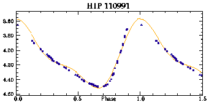
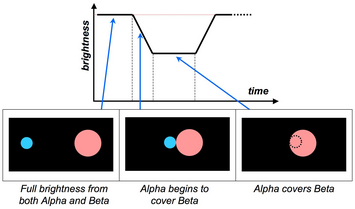
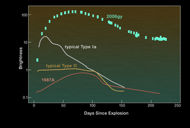

Despite the apparent constancy of the stars in the night sky, many stars are known to vary in their luminosity or spectral features, with well over 30,000 variable stars having now been catalogued. Generally, the kind of variability is classified as either intrinsic or extrinsic, depending on the cause of the fluctuations.
Intrinsic variability is due to physical changes such as eruptions or pulsations in the star itself, while extrinsic variability may be observed because of eclipses or the star’s rotation.
Different types of intrinsic variables include:
- Pulsating variables — stars which periodically expand and contract, such as Cepheids, RR Lyrae stars, RV Tauri stars and Long Period Variables.
- Eruptive variables — which have flares or mass ejections from their surface.
- Cataclysmic or explosive variables — dramatic changes in brightness are caused by violent thermonuclear events or catastrophic explosions resulting in novae or supernovae.
There are two main subgroups of extrinsic variables:
- Eclipsing binaries — where a binary star system’s brightness changes because one orbiting companion passes in front of the other.
- Rotating stars — dark or bright areas on the stellar surface may cause small changes in apparent brightness as the star rotates.
Because Cepheids have a well-defined period-luminosity relationship, they have been invaluable as standard candles in distance determinations.
Changes in variable stars’ magnitudes cover a huge range — from a thousandth of a magnitude in amplitude to over twenty magnitudes for some supernovae. Periods of different types of variables range from a fraction of a second to many years.
A plot of the measured brightness (or apparent magnitude) over time is known as a light curve and can give clues as to the cause of a star’s variability. Analysis of the period, regularity, amplitude and shape of light curves is a vital tool in the study of variability and the processes in the interior of stars.
|

Light curve of a Cepheid from HIPPARCOS
Credit: ESTEC, ESA. |
|
|

Light curve of an eclipsing binary system
Credit: Swinburne |

Light curves of Supernovae
Credit: NASA/CXC/UC Berkeley/N.Smith et al. |